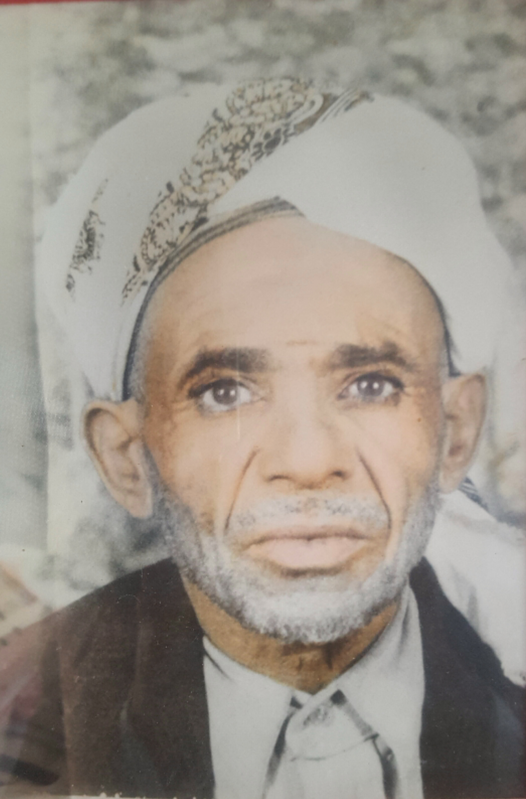

العلامة القاضي محمد عبد الرحمن السماوي من اهالي قرية عدن الاشلوح عالم وافقيه في امور الدين علم القران الكريم في عدة مناطق وقد كان امام وخطيب جامع عدن الاشلوح وسنذكر نبذة مختصرة من حياته
العلامة القاضي محمد عبد الرحمن السماوي من اهالي قرية عدن الاشلوح عالم وافقيه في امور الدين علم القران الكريم في عدة مناطق وقد كان امام وخطيب جامع عدن الاشلوح وسنذكر نبذة مختصرة من حياته
 العلامة القاضي محمد عبد الرحمن السماوي من اهالي قرية عدن الاشلوح عالم وافقيه في امور الدين علم القران الكريم في عدة مناطق وقد كان امام وخطيب جامع عدن الاشلوح وسنذكر نبذة مختصرة من حياته
العلامة القاضي محمد عبد الرحمن السماوي من اهالي قرية عدن الاشلوح عالم وافقيه في امور الدين علم القران الكريم في عدة مناطق وقد كان امام وخطيب جامع عدن الاشلوح وسنذكر نبذة مختصرة من حياته
 العلامة القاضي محمد عبد الرحمن السماوي من اهالي قرية عدن الاشلوح عالم وافقيه في امور الدين علم القران الكريم في عدة مناطق وقد كان امام وخطيب جامع عدن الاشلوح وسنذكر نبذة مختصرة من حياته
العلامة القاضي محمد عبد الرحمن السماوي من اهالي قرية عدن الاشلوح عالم وافقيه في امور الدين علم القران الكريم في عدة مناطق وقد كان امام وخطيب جامع عدن الاشلوح وسنذكر نبذة مختصرة من حياته
سنقوم بذكر نبذة مختصرة من مولفاته ومناقبة ودورة تعليمه للقران الكريم وكيف كانت معيشته واين عاش وكيفية وفاته ومتى توفي واين دفن

نسبة
هو محمد عبد الرحمن عبد الجبار محمد حسن ناصر محمد احمد ابراهيم عبدالله عبدالله علي القاسم علي محمد صالح ناصرعبدالله علي محسن الحسن محمد يحي علي محمدمحسن عبد القادر علي القاسم محمد ابابكر الصديق خليفة الاسلام الاول

مناقبة
ولد القاضي محمد عبد الرحمن في قرية عدن الاشلوح عام 1913م وتربى في القرية وتعلم القران علي يد والده العلامة القاضي عبد الرحمن عبد الجبار السماوي فاختاره الامام احمد لتعليم وارشاد الناس وقد ارسله الى إب ودرس في اب في جامعة المسعف تلقى الدروس في الارشاد والتوعية والقران والنحو والخطابة وكان الاول على زملائه وكان زميله القاضي يحي السؤسؤة وبعد سنة اعطي اوامر في تعليم ناحية السياني من الامام احمد في تعليم الدين والصلاةوبعدها ختم الناحية وقد عاد الى قريته فصار بيته مقر للذكر وللاحاديث وتعليم الدين السلامي وكان فطننا في النحو والتجويد والقراءة وصار خطيبا وامينا للقريةوبعدها عشق مكة المكرمة وزيارة النبي صلى الله عليه وسلم وقد حج الى بيت الله الحرام ٢٨ موسم وكان زاهدا اشتغل بالذكر ليلا ونهار وصار مثلا يحتذى به في الناحية وقد اشتهر بالصلاح والثقة وكان زاهدا تقيا وصار ملازما للذكر حتى وافته المنية في يوم الاربعاء صباحا 5 جماد اول 1426ه الموافق 2005/6/15م

مؤلفاته
هذه القصيدة من مؤلفات العلامةالقاضي محمد
عبدالرحمن عبد الجبار السماوي الفها حين عزم
الى مكة المكرمة
يالله المطلوب ارحم بنا واشفق *** يارازق الحيتان بين امواجه
من فيض بحرك كل نفس ترزق*** واقامها بارداقها دراجه
وماذا عليك وجوبا مطلق *** لكن فضائل شاملة عباجه
انت الذي ان جدت جودك مسبق*** وانت الذي تسرع قضات الحاجه
ارجوك تغفر لي فانت الاشفق ***ياخالقي من نطفة امشاجه
بحق نور الحبيب الاشفق ***غاره سريعة عاجلة فواجه
صلو على روح النبي الاصدق*** المصطفى من فاز في معراج
سميره جبريل لخوفه رفق *** حتى على المرافق تاجه
ابن السماوي بالمعاني دفق *** فاسمع ترى نتايج الخراجة
اعداد اسمى بالمجمل وافق ** ضعف الماء بواحد اخراجه
ياصاح قم شد الجواد الاسبق *** امهر محجل شانعات اهواجه
اعيان لهجمر القرض تتفشق *** تخرج شرار النار بن ادعاجه
اذان له راس السنان الاذلق *** ضرب الحوافر بالصفا رحاجه
ربرب محرب في صهيله يزعق*** اذا فلت اتشابحت اوداجه
من حضرة الطود العضيم الاسبق*** الدامغ العالي رياحه افواجه
على الرواس بالحجا الاطوق *** انهار من تحت الحجا نباحه
يزرع كما حب الحصيد الاذوق***ومزان عليه من السماء فجاجه
شامخ على صهبان عريض الخندق *** مرعا القمارى في سفوح افواجه
زاهي البكرا حضر وعرفه اعبق ***طيب الشجر صعتر وما نحتاجه
اذا صعد مكروب ومن اضيق***اعلا جبلنا للنفس يحتاجه
ٌفتح سلاه وباب كربه يغلق *** تحيا الخواطر من هوى افواجه
وقت الشفق والنو فيه اشرق *** هم يصعد واهل النفس معراجه
سفح الجبل ترى القمارى تزعق *** فتيانها فتيانها عباجه
ترى النشايد والحمايم تنعق *** مجلس اوادم مابها مزباجه
هم الحور غرر جباههم تعرق *** كان راح الخمر في خلجاجه
نجوى نشاوى والمعا ني تلحق *** كم عاشقا تزعزعت اخلاجه
من الحدق يسكب دموعا تحرق *** يخرج سماع ا بيا تها زعاجه
كم قد بسطنا في الجبل نتحقق *** كل الجهات بيامها البلاجه
بطالع العلوم بملحه بحرق *** ثم الخميس والفتح في منهاجه
كل الجهال لها رؤس ترمق *** والدامغ الدامغ راس الحاجه
هيهات كم من صبي يعشق *** حب المداكي فيوسفوح افواجه
من ذا الوطن حثحث ركاب الابلق *** قبيل تطلع شمسها الوهاجه
وامسي بالعدين لا تتعوق *** وانزل تهامه حرها وهاجه
وادخل زبيد على المشايخ واشعق *** منهم بدعوه ثم سرد لاجه
بيت الفقيه نحو الحديدة نطرق *** نبدي على بحورها العجاجه
سلم وسلم ربنا لا نغرق *** نركب على الواحها المواجه
ياحافض السفن ببحر اغمق *** احفض غريباصار بين امواجه
من تحتي الماء والسماء من فوق *** ماعاد الا نجومها الوهاجه
البر غاب والماء علينا اغلق *** ولا نرى جبل ولا شلجاجه
الادفور امواجها تدفق *** حالة علينا اهوالها الهجاجه
اشمر بنا لف الشراع الابرق *** طارت بنا فوق العجل دراجه
في نصف شهر قط مانتعوق *** نخرج على جده مع الخراجه
شعثا وغبرا بالتالبي نزعق *** ومحرمين في زمرة الحجاجه
وام القرى نكسب خل احذق *** يدلنا على قضاة الحاجه
نفوز بمن في حبها نتعشق *** اشكو جفاها هجر ها فلاجه
دعجا نجا بلجا صفاها اشرق *** كحال ليلا سال غناجه
تلبس قراطق الحرير الازرق *** منسوج ذهب مرصوع في انشاجه
فضه ورق والتبر فيها ملفق *** والخز والديباج في ديباجه
مشطوب كتوب مكتوب قول الاصدق *** حروف تسرج في الحرم سراجه
ومضحك المبسم بروق الابرق *** والريق عسل والسحر بين ادعاجه
وريحها المسك السحيق الاعبق *** والعطر شايً عرفها نعاجه
ثم الشمطري والعبيٌر الافوق *** والند يفتح لوعة الملهاجه
افدي قوامها البديع الارشق *** وحيد رور اعيانها المواجه
مع الدراي والجمال الاغدق *** والسرفي احواضها الغناجه
والله لادخل جوفها واتحدق *** واشرب زالال اعيانها النباجه
ومن مراشفها ارتشف واتعلق *** بذيالها وامرج مع المراجه
وامضي مدينة الحبيب الاشفق *** نزور من في الاخره نحتاجه
قبر النبي ومن بقوله اصدق *** واله وصحبه وازواجه
حلفت لاقصد نحوهم واتعلق *** بكل واحد في محل ابراجه
بحقهم ياذا العلا لا تفرق *** بيني وبينهم في حاجه
واحشرنا الجميع في زمرتهم نترفق *** يوم اللقا فيهم من الهجاجه
وبعدها ارض اليمن نتشوق *** حب الوطن اشواقنا زعاجه
والختم صلوا ما البلابل تزعق *** او ماالقمر يدور في ابراجه
على النبي والال كلهم دقدق *** جيش العدا يرجون قضا الحاجه
الحقوق محفوضة لدى الناشر لايحق لاي شخص اقتباس جزء منها الا اذا ذكر المصدر
الحقوق محفوضة لدى alsamawy.com